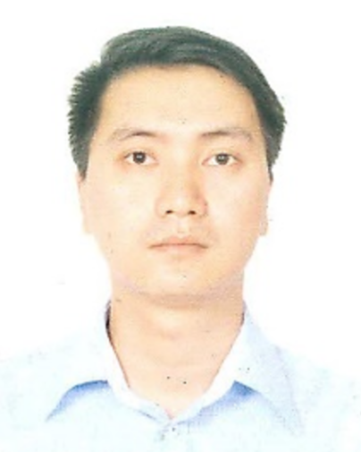

Trường Đại học CNTT & Truyền thông Việt - Hàn (VKU), Đại học Đà Nẵng
Tôi hiện là Giảng viên tại Khoa Khoa học Máy tính, Trường Đại học CNTT & Truyền thông Việt - Hàn (Đại học Đà Nẵng). Hiện tại, tôi đang là Nghiên cứu sinh Tiến sĩ tại Đại học Công nghệ Quốc gia Đài Bắc (Taiwan).
Các bài báo xuất bản tại các Tạp chí & Hội thảo Quốc tế được lưu vết Scopus / Springer / IEEE: